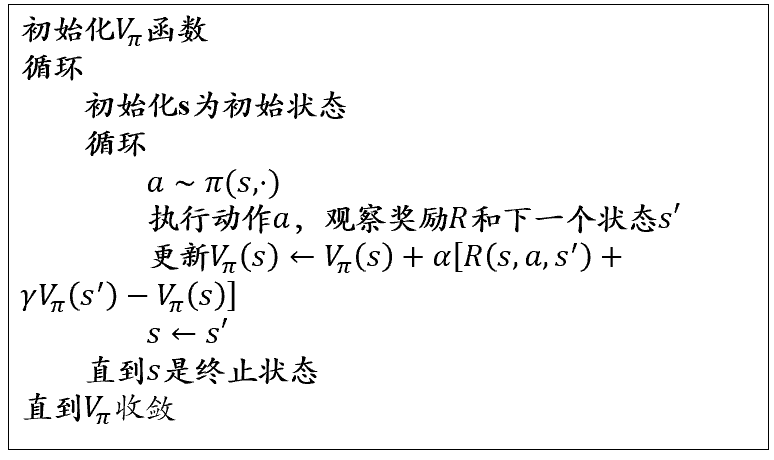

强化学习¶
强化学习问题定义¶
强化学习（Reinforcement Learning, RL）是一种以决策为核心的机器学习方法，模型通过与环境交互，从反馈信号中学习最优策略，以实现长期累积收益的最大化。
核心概念¶
强化学习的核心概念包括以下三个部分：
- 智能体（Agent）
智能体是执行动作、与环境交互的主体。它通过观察环境状态，选择动作并从环境中获取奖励，逐步学习最佳的行为策略。
- 环境（Environment）
环境是智能体行为发生的外部条件。智能体的动作会影响环境的状态变化，同时环境会根据智能体的行为提供奖励信号。
- 策略（Policy, \(\pi\)）
策略是智能体决策的规则，表示为在某一状态 \(s\) 下采取动作 \(a\) 的概率分布：
$$
\pi(a|s) = P(a|s)
$$
策略分为以下两种：
- 确定性策略：在每个状态下选择一个固定的动作。
- 随机性策略：在每个状态下根据概率分布选择动作。
- 累积奖励（Cumulative Reward）
强化学习的目标是最大化累积奖励，从时间步 \(t\) 开始的累积奖励定义为： $$ G_t = R_{t+1} + \gamma R_{t+2} + \gamma^2 R_{t+3} + \dots = \sum_{k=0}^\infty \gamma^k R_{t+k+1} $$ 其中，\(\gamma\) 是折扣因子，\(0 \leq \gamma \leq 1\)，表示未来奖励的衰减程度。
- 值函数（Value Function）
值函数用于评估某一状态（或状态-动作对）的优劣，其定义为从某一状态开始的累积奖励期望值：
- 状态值函数 \(V_\pi(s)\)：
$$ V_\pi(s) = \mathbb{E}[G_t | s_t = s, \pi] $$ - 状态-动作值函数 \(Q_\pi(s, a)\)：
$$ Q_\pi(s, a) = \mathbb{E}[G_t | s_t = s, a_t = a, \pi] $$
- 探索与利用的权衡（Exploration vs Exploitation）
- 探索（Exploration）：尝试未知的状态和动作，以发现潜在的高奖励策略。
- 利用（Exploitation）：基于已有经验选择最优动作，追求当前的最高奖励。
强化学习需要在探索和利用之间找到平衡。
马尔可夫决策过程（MDP）¶
马尔可夫决策过程由以下 5 个元素组成：
-
状态（State, \(S\)）
系统当前所处的描述，表示为 \(s \in S\)。
- \(S\) 是状态空间，包括所有可能的状态。
- 例如，在棋盘游戏中，\(s\) 可以表示当前棋盘的布局。
-
动作（Action, \(A\)）
智能体在当前状态下可以选择的行为，表示为 \(a \in A(s)\)。
- \(A(s)\) 是状态 \(s\) 下可执行的动作集合。
- 例如，在机器人控制中，\(a\) 可以表示机器人执行的某个运动指令。
-
状态转移概率（Transition Probability, \(P\)）
状态从 \(s\) 转移到 \(s'\) 的概率，定义为 \(P(s'|s, a)\)，即在状态 \(s\) 下执行动作 \(a\) 后转移到状态 \(s'\) 的概率。
- 满足马尔可夫性：未来状态 \(s'\) 仅依赖于当前状态 \(s\) 和动作 \(a\)，而与过去的状态序列无关。
-
奖励（Reward, \(R\)）
智能体在某一状态或执行某一动作后获得的即时反馈信号，表示为 \(R(s, a)\) 或 \(R(s, a, s')\)。
- 奖励函数衡量某一状态或行为的优劣，是强化学习的学习目标。
-
折扣因子（Discount Factor, \(\gamma\)）
表示未来奖励的衰减程度，范围为 \(0 \leq \gamma \leq 1\)。
- 当 \(\gamma\) 接近 1 时，模型更重视长期回报；当 \(\gamma\) 接近 0 时，模型更关注短期奖励。
强化学习的目标¶
强化学习的目标是找到一个最优策略 \(\pi^*\)，使得在每一个时间步 \(t\)，智能体的累积奖励期望最大化。策略 \(\pi\) 是一个映射，定义为： $$ \pi(a|s) = P(a|s) $$ 即在状态 \(s\) 下选择动作 \(a\) 的概率。
累积奖励的定义为： $$ G_t = R_{t+1} + \gamma R_{t+2} + \gamma^2 R_{t+3} + \dots = \sum_{k=0}^\infty \gamma^k R_{t+k+1} $$ 其中：
- \(G_t\) 是从时间步 \(t\) 开始的累积奖励。
- \(\gamma\) 是折扣因子，用于平衡短期和长期奖励。
强化学习的目标可以表示为： $$ \pi^* = \arg\max_{\pi} \mathbb{E}[G_t|\pi] $$
强化学习的核心问题¶
-
探索与利用的权衡（Exploration vs Exploitation Tradeoff）
- 探索：尝试未知的状态和动作，以发现潜在的更高奖励。
- 利用：基于已有经验选择最优动作，以获得更高的当前奖励。
- 强化学习需要在探索和利用之间找到平衡。
-
策略优化（Policy Optimization）
- 如何更新策略 \(\pi\)，使得累积奖励最大化，是强化学习的核心问题之一。
-
策略优化的两种方法：
- 值函数方法：通过学习值函数（如 Q 值）间接优化策略。
- 策略梯度方法：直接优化策略 \(\pi\)。
-
长期与短期回报的平衡
- 强化学习需要考虑短期奖励和长期奖励之间的权衡。
- 折扣因子 \(\gamma\) 决定了智能体对未来奖励的重视程度。
基于价值的强化学习¶
基于价值的强化学习（Value-based Reinforcement Learning）是一类通过学习状态值函数或状态-动作值函数来确定最优策略的强化学习方法。其核心思想是评估每个状态或状态-动作对的长期累积奖励期望值，并据此选择最优动作。
核心概念¶
- 值函数（Value Function）
值函数用于评估状态或状态-动作对的优劣。基于价值的强化学习的目标是通过迭代更新值函数来找到最优策略。常见的值函数包括：
-
状态值函数 \(V(s)\)：描述从状态 \(s\) 开始、遵循某策略 \(\pi\) 所能获得的期望累积奖励： $$ V_\pi(s) = \mathbb{E}[G_t | s_t = s, \pi] $$
-
状态-动作值函数 \(Q(s, a)\)：描述从状态 \(s\) 执行动作 \(a\) 后、遵循某策略 \(\pi\) 所能获得的期望累积奖励： $$ Q_\pi(s, a) = \mathbb{E}[G_t | s_t = s, a_t = a, \pi] $$
最优值函数：最优策略 \(\pi^*\) 对应的值函数：
-
最优状态值函数：
$$ V^*(s) = \max_\pi V_\pi(s) $$
-
最优状态-动作值函数：
$$ Q^*(s, a) = \max_\pi Q_\pi(s, a) $$
- 贝尔曼方程（Bellman Equation）
贝尔曼方程描述了值函数的递归关系，为基于价值的强化学习提供了更新的理论基础：
对于状态值函数：
对于状态-动作值函数：
最优状态值函数的贝尔曼方程：
最优状态-动作值函数的贝尔曼方程：
典型方法¶
动态规划（Dynamic Programming, DP）¶
动态规划是基于已知的环境模型，通过递归计算值函数来找到最优策略的方法。
-
策略评估（Policy Evaluation）
策略评估用于计算一个固定策略 \(\pi\) 的值函数，通过反复迭代直到收敛： $$ V_\pi(s) \gets \sum_{a \in A} \pi(a|s) \sum_{s' \in S} P(s'|s, a) \left[R(s, a, s') + \gamma V_\pi(s')\right] $$ \(\sum_{a \in A} \pi(a|s) \sum_{s' \in S}P(s'|s, a)\) 其实都是概率分布，动态规划的限制就在于我们要提前知道整个的 \(P\) 概率分布.
-
策略改进（Policy Improvement）
策略改进通过选择能最大化值函数的动作来更新策略：
-
策略迭代（Policy Iteration）
策略迭代是交替进行策略评估和策略改进的过程，最终收敛到最优策略 \(\pi^*\)。
-
值迭代（Value Iteration）
值迭代通过直接更新值函数来找到最优策略： $$ V(s) \gets \max_{a \in A} \sum_{s' \in S} P(s'|s, a) \left[R(s, a, s') + \gamma V(s')\right] $$
蒙特卡洛方法（Monte Carlo Methods）¶
蒙特卡洛方法通过采样与环境的交互序列，直接估计值函数，无需已知的环境模型。适用于长期奖励计算。
-
核心思想
蒙特卡洛方法基于多次模拟的累积奖励平均值来估计值函数： $$ V(s) = \mathbb{E}[G_t | s_t = s] $$
-
回报计算
在一个完整的序列（Episode）中，回报 \(G_t\) 是从时间步 \(t\) 开始的累积奖励： $$ G_t = R_{t+1} + \gamma R_{t+2} + \dots + \gamma^{T-t-1} R_T $$
-
优点与局限
- 优点：无需环境模型，能够处理复杂的非周期性任务。
- 局限：计算延迟（需等待整个序列结束），对任务的样本效率要求较高。
时间差分学习（Temporal-Difference, TD）¶

时间差分方法结合了动态规划和蒙特卡洛方法的优势，能够在未到达最终状态之前就更新值函数。
- 核心思想
时间差分方法通过对当前的值函数进行局部更新，而不需要等待整个序列结束： $$ V(s) \gets V(s) + \alpha \left[R + \gamma V(s') - V(s)\right] $$
- 典型算法
- TD(0)：直接更新当前状态的值函数。
- SARSA：基于当前策略更新状态-动作值函数（on-policy 方法）：
$$ Q(s, a) \gets Q(s, a) + \alpha \left[R + \gamma Q(s', a') - Q(s, a)\right] $$ - Q-Learning：基于最优策略更新状态-动作值函数（off-policy 方法）：
$$ Q(s, a) \gets Q(s, a) + \alpha \left[R + \gamma \max_{a'} Q(s', a') - Q(s, a)\right] $$
- 引入 \(\epsilon\) greedy 探索机制：

防止每个点都经验主义，导致走不到目标点。
（当然，也可以引入 Deep-Learning 来拟合 q 函数，在 \(q(s,\alpha)\) 的基础上再引入 \(\theta\)：）

- 特点与局限
- 特点：高效、无需等待完整序列，适合实时任务。
- 局限：对学习率 \(\alpha\) 的选择较敏感，可能收敛较慢。
基于策略的强化学习¶
基于策略的强化学习（Policy-based Reinforcement Learning）是一类通过直接优化策略 \(\pi(a|s)\) 来找到最优策略的强化学习方法。与基于价值的方法不同，基于策略的方法不需要显式地估计值函数，而是直接建模和优化策略函数。基于策略的强化学习能够处理高维或连续的动作空间，适用于策略需要随机性或复杂性的场景。
核心思想¶
- 策略函数
策略 \(\pi_\theta(a|s)\) 是一个参数化的函数，表示在状态 \(s\) 下选择动作 \(a\) 的概率，由参数 \(\theta\) 控制。
策略可以是：
- 确定性策略：\(\pi_\theta(s) = a\)，在状态 \(s\) 下输出确定的动作 \(a\)。
- 随机性策略：\(\pi_\theta(a|s)\)，在状态 \(s\) 下按照分布生成动作 \(a\)。
- 目标函数
基于策略的方法的目标是最大化累积奖励的期望： $$ J(\theta) = \mathbb{E}{\tau \sim \pi\theta} \left[\sum_{t=0}^\infty \gamma^t R_t \right] $$ 其中，\(\tau\) 表示一个状态-动作序列（trajectory）。
- 策略优化
通过梯度上升法优化目标函数 \(J(\theta)\)，更新策略参数 \(\theta\)： $$ \theta \gets \theta + \alpha \nabla_\theta J(\theta) $$ 其中，\(\alpha\) 是学习率。
基于蒙特卡洛采样的策略梯度法¶
基于蒙特卡洛采样的策略梯度法使用完整的状态-动作序列（trajectory）对策略梯度进行估计，通过累积奖励指导策略的更新。
策略梯度定理¶

那个对于策略求导，感觉就是参数改变，策略会产生偏移的量。

策略梯度的数学公式为：
其中：
- \(\log \pi_\theta(a_t|s_t)\) 是策略的对数概率。
- \(G_t = \sum_{k=0}^\infty \gamma^k R_{t+k}\) 是从时间步 \(t\) 开始的累积奖励。
蒙特卡洛梯度估计¶
- 采样序列：从当前策略 \(\pi_\theta\) 中采样多条完整的状态-动作序列 \(\tau\)。
- 计算累积奖励：对每条序列，计算从每个时间步 \(t\) 开始的累积奖励 \(G_t\)。
- 更新参数：基于采样序列计算梯度，更新策略参数： $$ \nabla_\theta J(\theta) \approx \frac{1}{N} \sum_{i=1}^N \sum_{t=0}^\infty \nabla_\theta \log \pi_\theta(a_t|s_t) G_t $$ 其中，\(N\) 是采样序列的数量。
基于时序差分的策略梯度法¶
基于时序差分（Temporal-Difference, TD）的策略梯度法结合了蒙特卡洛采样和时间差分的思想，通过局部更新策略，避免等待完整序列结束，具有更高的计算效率。
策略梯度定理的改进¶
在基于时序差分的方法中，累积奖励 \(G_t\) 被替换为状态值函数 \(V_\pi(s_t)\) 或优势函数 \(A_\pi(s_t, a_t)\)，从而提高梯度估计的稳定性。
- 状态值函数 \(V_\pi(s_t)\)：描述状态 \(s_t\) 的价值。
- 优势函数 \(A_\pi(s_t, a_t)\)：表示动作 \(a_t\) 相对于平均策略的优势，定义为： $$ A_\pi(s_t, a_t) = Q_\pi(s_t, a_t) - V_\pi(s_t) $$
时间差分的策略梯度更新¶
时间差分的策略梯度公式为：
其中：
- \(\delta_t\) 是 TD 误差，定义为： $$ \delta_t = R_t + \gamma V_\pi(s_{t+1}) - V_\pi(s_t) $$
优化方法¶
- Actor-Critic 方法
-
Actor（策略网络）：参数化策略 \(\pi_\theta(a|s)\)，更新策略参数 \(\theta\)。
-
Critic（值函数网络）：参数化值函数 \(V_w(s)\)，更新值函数参数 \(w\)。
Actor-Critic 的更新规则为（一是改变策略，而是改变估值）： $$ \theta \gets \theta + \alpha \nabla_\theta \log \pi_\theta(a_t|s_t) \delta_t $$ $$ w \gets w + \beta \delta_t \nabla_w V_w(s_t) $$
- 优势演员评论法（Advantage Actor-Critic, A2C）
- 使用优势函数 \(A_\pi(s_t, a_t)\) 替代 TD 误差 \(\delta_t\)，提高收敛性。